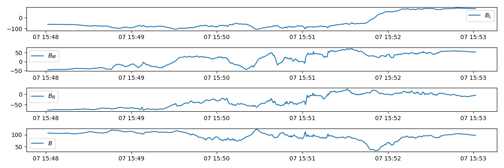

Data Analysis in Space Physics
Diffusion Region Detection
Magnetic reconnection occurs in a small diffusion region around the X-line but its consequences are large scale. There are different approaches to determine whether or not we have encountered the diffusion region. The expected kinetic signatures of diffusion region:
- enhanced dissipation
- non-gyrotropic behavior
- electron distribution functions
A measure of non-gyrotropy $D_{ng}$ of a specific population can be think of a ratio between off-diagonal terms and diagonal terms of the pressure tensor:
where
$\overleftrightarrow{G}$ is the gyrotropic term and $\overleftrightarrow{N}$ is the nongyrotropic term. Note that this is frame dependent and population specific.
It has been found from PIC simulations that especially in asymmetric reconnection, $E_M^\ast\neq 0$ where $\mathbf{E}^\ast=\mathbf{E}+\mathbf{V}_e\times\mathbf{B}$ is not a good enough indicator. Following the principle ideas of finding a measure:
- dissipation should be related to non-ideal energy conversion;
- scalar indicator;
- insensitive to the relative motion,
a frame independent dissipation measure is constructed,
which is a Lorentz-invariant scalar representing the energy conversion rate in the frame of electron bulk motion. In the nonrelativistic limit, one can simplify the equation by setting $\gamma_e\rightarrow 1$. This can be easily confirmed by multiplying $\mathbf{j}^\prime=qn_i\mathbf{V}_i=\mathbf{j}-\rho_c\mathbf{V}_e$ and $\mathbf{E}^\prime = \mathbf{E}+\mathbf{V}\times\mathbf{B}$.
This is another good indicator of the electron diffusion region, although slightly enhanced along the separatrices as well.
An alternative and complementary approach is to identify diffusion region candidates by a combination of representative properties. In practice for reconnection with no guide field for instance, the overlapped region of $B_L=0$ and $E_N$ peak, where some researchers call 'shoulder', is already good enough for the identification.
Spectral Analysis
FFT
Periodogram
This is a group of techniques to determine the periodicity of data. Julia has implementations in the DSP package. Here we introduce the usage by looking at practical examples.
Spectrogram
Spectrogram is used a lot in wave analysis. For my purpose, I use it as an approach to visualize time dependent simulation data along a continuous line region.
Minimum Variance Analysis
A nice introduction is given by Bengt U.Ö.Sonnerup and Maureen Scheible. Here is a brief summary of the idea. The implementation of MVA can be found in MVA.jl.
The main purpose of minimum or maximum variance analysis (MVA) is to find, from single-spacecraft data, an estimator for the direction normal to a one-dimensional or approximately one-dimensional current layer, wave front, or other transition layer in a plasma.
For real transition layers observed in space there are usually more or less pronounced deviations from the ideal 1-D model. The layer is likely to have 2-D or 3-D internal structures which evolve in time and to have temporal fluctuations in the orientation of its normal as well.
The minimum variance technique is designed to deal with the situation where some or all of the non-ideal effects mentioned above, except a systematic temporal change in the normal direction, $\widehat{n}$, are present. As the estimate of $\widehat{n}$, the method identifies that direction in space along which the field-component set {$\mathbf{B}^{(m)}\cdot\widehat{n}$} $(m = 1, 2, 3...M)$ has minimum variance. In other words, $\widehat{n}$ is determined by minimisation of
where the average $\langle\mathbf{B}\rangle$ is defined by
and where the minimisation is subject to the normalisation constraint $|\widehat{n}|=1$. Using a Lagrange multiplier $\lambda$ to implement this constraint, one then seeks the solution of the set of three homogeneous linear equations
where $\sigma^2$ is given by the equation above and $\widehat{n}$ is represented in terms of its three components $(n_x, n_y, n_z)$ along the cartesian coordinate system X, Y, Z (e.g., GSE or GSM) in which the field data $\{\mathbf{B}^{(m)} \}$ are given. When the differentiations in equations above have been performed, the resulting set of three equations can be written in matrix form as
where the subscripts $\mu,\nu = 1,2,3$ denote cartesian components along the X, Y, Z system and
is the magnetic variance matrix. It is seen from the equation that the allowed $\lambda$ values are the eigenvalues $\lambda_1,\lambda_2,\lambda_3$ (given here in order of decreasing magnitude) of $M_{\mu\nu}^{B}$. Since $M_{\mu\nu}^{B}$ is symmetric, the eigenvalues are all real and the corresponding eigenvectors, $x_1$, $x_2$, and $x_3$, are orthogonal. The three eigenvectors represent the directions of maximum, intermediate, and minimum variance of the field component along each vector.
In practice, the ratio of intermediate to minimum variance should be larger than 5 to give good fit of LMN.
A not so good example case is the Galileo G8 Ganymede flyby magnetometer data:  where the ratio between the intermediate and minimum eigenvalue is only about 2.
ULF Wave Detection
ULF waves are MHD waves: Alfvén wave, fast wave and slow wave. One basic approach to identify waves is to check the correlation of quantity perturbations.
The phase speed of shear Alfvén wave is
where $v_A$ is the Alfvén speed and $\theta$ is the angle between wave vector $\mathbf{k}$ and magnetic field $\mathbf{B}$.
The perturbed quantities of Alfvén waves follow these relations:
where $\delta \mathbf{v}$, $\delta \mathbf{B}$, and $\delta \rho$ are perturbed plasma velocity, magnetic fields, and plasma density, respectively, and $B_0$ is the background magnetic magnitude.
For slow and fast waves, the phase speeds are
The "+" is for fast waves and "−" for slow waves, and $v_S$ is the sound speed. The perturbed quantities for fast and slow waves are
Thus generally the Alfvén wave is identified by the correlations between velocity and magnetic field perturbations, and the fast and slow waves are identified by the negative (for slow waves) or positive (for fast waves) correlations between either density and magnetic field perturbation or thermal pressure and magnetic pressure perturbation.
For the magnetosonic waves, consider using $\delta \mathbf{E}$ and $\delta \mathbf{B}$ for identifying speed. The slopes of the curves $\delta E∕\delta B$ correspond to the wave propagation speed in the spacecraft frame.
Transverse and shear Alfvén wave refer to actually the same thing: the descriptions arise from $\mathbf{k}\cdot\mathbf{V}=0$ and $\mathbf{V}\cdot\mathbf{B}_0=0$.
The fast and slow magnetosonic waves are associated with non-zero perturbations in the plasma density and pressure, and also involve plasma motion parallel, as well as perpendicular, to the magnetic field. The latter observation suggests that the dispersion relations $\omega=kV_{\pm}$ are likely to undergo significant modification in collisionless plasmas. In order to better understand the nature of the fast and slow waves, let us consider the cold-plasma limit, which is obtained by letting the sound speed $V_S$ tend to zero. In this limit, the slow wave ceases to exist (in fact, its phase velocity tends to zero) whereas the dispersion relation for the fast wave reduces to
This can be identified as the dispersion relation for the compressional-Alfvén wave. Thus, we can identify the fast wave as the compressional-Alfvén wave modified by a non-zero plasma pressure.
In the limit $V_A\gg V_S$, which is appropriate to low-$\beta$ plasmas, the dispersion relation for the slow wave reduces to
This is actually the dispersion relation of a sound wave propagating along magnetic field-lines. Thus, in low-$\beta$ plasmas the slow wave is a sound wave modified by the presence of the magnetic field.
In reality, waves can be mixed together with mode conversions. Also, notice that the classical wave theory is based on spatially homogeneous plasma assumption, which is rarely the case in nature such as the magnetosphere.
A tricky part in practice is how to get the average through smoothing. Note that a real satellite moves both in time and space. Usually people do moving-box-average to get an average state within a short period.
A more careful analysis is called Walen test.
However, always keep in mind that the most reliable way of identifying waves is to calculate the dispersion relation.
Correlation Test Between Two Variables
This part takes the reference from R.
Correlation test is used to evaluate the association between two or more variables.
If there is no relationship between the two variables, the average of $x$ should be the same regardless of $y$ and vice versa.
Methods for correlation analyses
There are different methods to perform correlation analysis:
- Pearson correlation (r), which measures a linear dependence between two variables (x and y). It’s also known as a parametric correlation test because it depends to the distribution of the data. It can be used only when x and y are from normal distribution. The plot of y = f(x) is named the linear regression curve.
- Kendall tau and Spearman rho, which are rank-based correlation coefficients (non-parametric).
Correlation formula
In the formula below,
- x and y are two vectors of length n
- $\bar{x}$ and $\bar{y}$ corresponds to the means of $x$ and $y$, respectively.
Pearson correlation formula
The p-value (significance level) of the correlation can be determined :
- by using the correlation coefficient table for the degrees of freedom : $df=n−2$, where $n$ is the number of observation in $x$ and $y$ variables.
2 or by calculating the $t$ value as follows:
where the corresponding p-value is determined using t table distribution for $df=n-2$. If the p-value is $< 5\%$, then the correlation between $x$ and $y$ is significant.